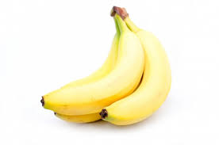
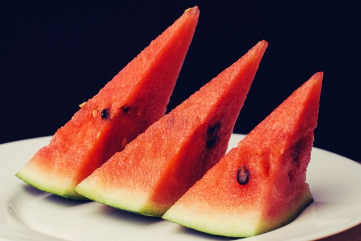
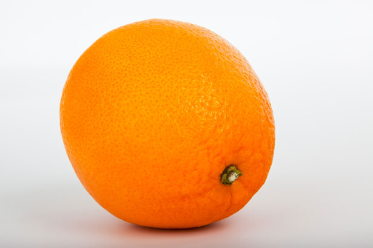
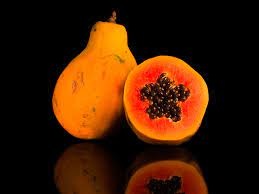

Mas oque são frutas?
Pra falar a verdade, não tenho muita certeza de como caractegorizar fruta não, mas creio que a divisão deve ser
levar em conta se o alimento em questão vem de um fruto ou não.
Já segundo o google:Fruta é um termo, sem valor botânico, que se refere a um fruto ou pseudofruto que apresenta sabor adocicado, aroma característico e, geralmente, é rico em suco. As frutas são extremamente importantes na nossa alimentação, sendo um alimento rico em fibras, vitaminas e sais minerais.
Top 5 melhores frutas (100% pessoal)
Número 1:
Banana

Simples. Prática. Saborosa.
Simplesmente a melhor de todas, minha queridinha e também do maior parte das pessoas, a fruta que literalmente
evoluiu pra se tornar agrádavel ao paladar humano.
Número 2:
Maçã

A segunda colocada. É boa pra caramba, mas não o suficiente para destronar a banana.
Número 3:
Melancia

Tem muita gente que não gosta, já eu acho ótima.
Número 4:
Laranja

Claramente superestimada, não faço ideia de porque todo mundo fala tão bem de laranja.
Faz bem pro estômago e é um pouquinho boa, mas merece o top 4.
Número 5:
Mamão

Esquecido e abandonado por todos, o mamão faz bem pra soltar o estômago e tem o gosto bom, é meio chato de comer
as vezes, mas merece ser lembrado.

Banana
Simples. Prática. Saborosa.
Simplesmente a melhor de todas, minha queridinha e também do maior parte das pessoas, a fruta que literalmente
evoluiu pra se tornar agrádavel ao paladar humano.
Maçã
A segunda colocada. É boa pra caramba, mas não o suficiente para destronar a banana.
Melancia
Tem muita gente que não gosta, já eu acho ótima.
Laranja
Claramente superestimada, não faço ideia de porque todo mundo fala tão bem de laranja.
Faz bem pro estômago e é um pouquinho boa, mas merece o top 4.
Mamão
Esquecido e abandonado por todos, o mamão faz bem pra soltar o estômago e tem o gosto bom, é meio chato de comer as vezes, mas merece ser lembrado.